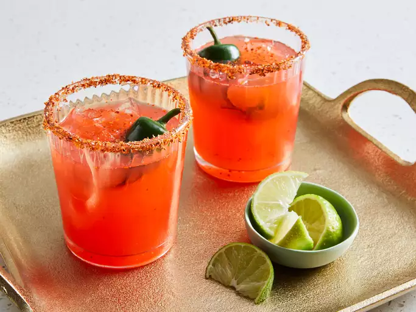

Vampiros Mexicanos

Description
A fun halloween inspired drink
Ingredients
- ice cubes, or as needed
- 3 ounces sangrita (Mexican-style bloody mary mix with orange and lime)
- 1 ½ fluid ounces silver tequila (100% agave)
- 1 ½ ounces citrus-flavored soda (such as Squirt®)
- ½ lime, juiced
- 1 pinch Mexican-style chili powder with lime (such as Tajin® fruit seasoning)
- jalepenos (optional)
Steps
- Fill a highball glass with ice cubes; pour in sangrita, tequila, citrus soda, lime juice, and chili-lime seasoning. Stir to mix well.
- Add jalepenos for garnish (optional)
- Enjoy (with caution!)